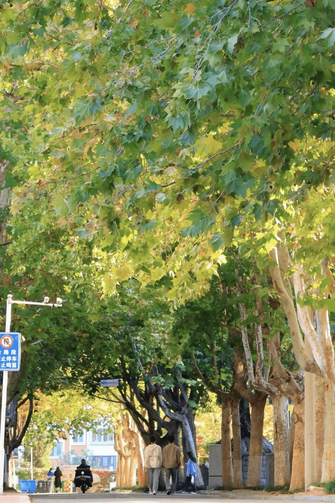

当春风拂过校园的每一寸土地，春华便在时光里缓缓铺展开来。清晨的阳光穿过教学楼前的香樟树，在地面投下细碎的光影，露珠在叶片上滚动，折射出整个校园的生机与活力。沿着主路向前，两侧的樱花树早已缀满了粉白的花朵，风一吹，花瓣便如雪般飘落，铺成一条浪漫的花径，走在其中，仿佛置身于春日的童话世界。不远处的人工湖是校园里最灵动的角落，湖水清澈见底，倒映着蓝天、白云和岸边的垂柳，偶尔有锦鲤在水中嬉戏，泛起一圈圈涟漪，为静谧的校园增添了几分灵动。湖边的草坪经过一整个冬天的蛰伏，在春日里重新焕发出翠绿的生机，同学们或坐或卧，在草地上读书、聊天、晒太阳，享受着春日的温柔。校园的角落处处都是春日的惊喜：图书馆旁的玉兰花亭亭玉立，洁白的花朵在枝头绽放，散发着淡淡的清香；食堂后的油菜花田一片金黄，蜜蜂在花丛中忙碌，奏响了春日的交响曲；操场边的迎春花顺着围栏蔓延，明黄的花朵像是春日的使者，宣告着温暖的到来。每一处风景都像是一幅精心绘制的油画，将校园的春日之美展现得淋漓尽致，让每一个身处其中的人都能感受到自然的馈赠与青春的美好。
春日的校园，不仅有花草的芬芳，更有四季更迭的诗意与生机。午后的阳光温暖而不炽热，洒在教学楼的玻璃窗上，反射出耀眼的光芒，教室里传来朗朗的读书声，与窗外的鸟鸣声交织在一起，构成了校园里最动人的旋律。漫步在校园的林荫道上，两侧的树木抽出了嫩绿的新芽，枝条在春风中轻轻摇曳，像是在向每一个路过的人招手。校园里的小花园是春日的宝藏，各色花卉竞相开放：粉色的桃花、白色的梨花、紫色的二月兰，还有不知名的小野花，将花园装点成了五彩斑斓的世界。在这里，你可以停下脚步，静静感受春日的美好，看蝴蝶在花丛中起舞，听鸟儿在枝头歌唱，让心灵在自然的怀抱中得到治愈。傍晚时分，夕阳为校园镀上了一层温暖的金色，教学楼、图书馆、操场都笼罩在温柔的余晖中，同学们三三两两走在回家的路上，欢声笑语回荡在校园的每一个角落。春日的校园，是自然与人文的完美融合，是青春与梦想的启航之地，每一处风景都承载着同学们的回忆与憧憬，每一缕春风都吹拂着成长的希望，让人流连忘返，深深沉醉在这美丽的春华之中。
